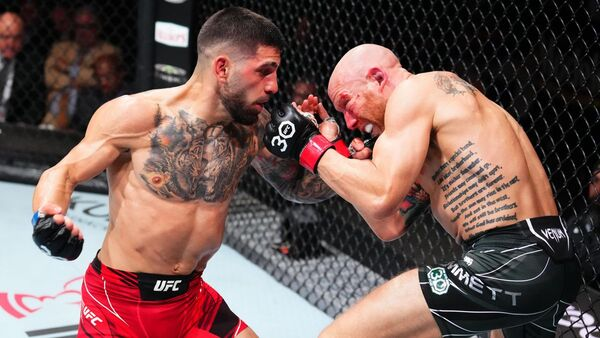

Ilia Topuria de niñoTopuria nació en Halle (Alemania). Es hijo de padres georgianos, con los que se mudó a Georgia a los siete años. Comenzó a practicar lucha grecorromana en la escuela. A los catorce años se trasladó a vivir a Alicante, España, donde comenzó a practicar artes marciales mixtas de la mano de los argentinos Jorge y Agustín Climent, en el gimnasio Climent Club. A nivel amateur consiguió el campeonato de Arnold Schwarzenegger, el Arnold Fighters y un subcampeonato de Europa de jiu-jitsu brasileño en la categoría júnior. En 2015 debutó como profesional en promotoras locales. Antes de esto trabajó como vigilante de seguridad privada y de cajero en diversas tiendas.

Estilo de pelea Su estilo de boxeo se caracteriza por una selección precisa de golpes, combinaciones fluidas y una potencia notable, que se puso de manifiesto en sus victorias por nocaut sobre Alexander Volkanovski, Max Holloway y Charles Oliveira. Su ejecución del boxeo es estratégica, utilizando su juego de pies y posicionamiento para preparar golpes limpios que alteran el curso de la pelea. Ha citado el estilo de boxeo mexicano, en particular el de Canelo Álvarez, como una gran inspiración para su golpeo, adaptando sus principios a las artes marciales mixtas.